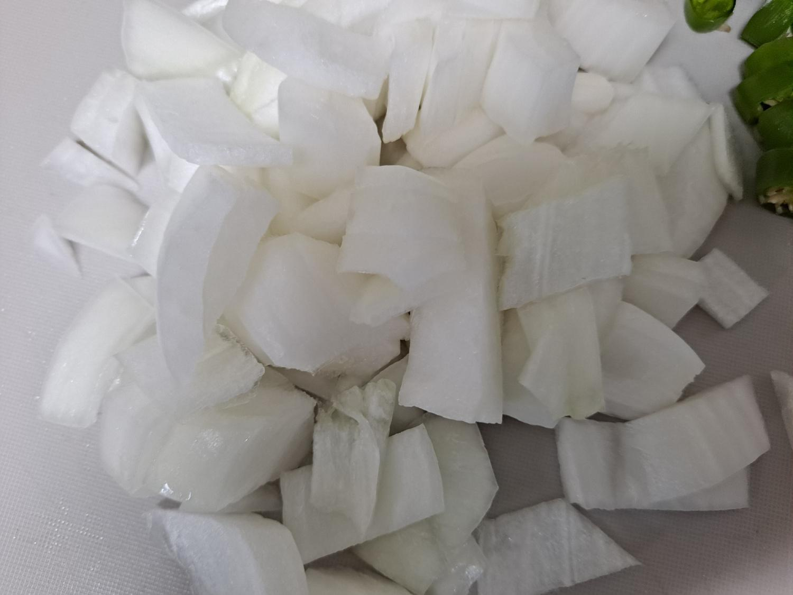

동영상
RECIPE TIP
말 그대로 짜글이~ 뚝배기에 끓여주면 더 맛있고,
짜글짜글 많이 졸여서 먹으면 더 맛있어요~
STEP.1
분량의 양념을 계량해 잘섞어서 준비해주세요.
밥숟가락 크기로
고춧가루 2, 진간장 3, 다진 마늘 1 ,
맛술 1 , 고추장 1, 된장 1/3 , 물 2컵

STEP.2
양파 반개는 작게 썰어주세요.
STEP.3
땡초2개도 쫑쫑 썰어주세요.
STEP.4
감자도 껍질을 벗기고 깍뚝썰기해주세요.
STEP.5
스팸 1캔은 위생비닐에 넣고 으깨서 준비해주세요.
STEP.6
냄비에 스팸, 감자, 양파, 고추를 넣어주세요.~
STEP.7
물 넣고 만들어둔 양념장을 넣어주세요
STEP.8
센불에서 10분가량 끓여주세요.
STEP.9
10분간 센불에서 끓인후 중약불로 줄여 뭉근하게 졸여주세요
STEP.10
국물이 짜글이처럼 자박해지면 스팸감자 짜글이 완성입니다.